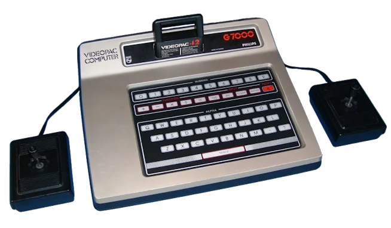
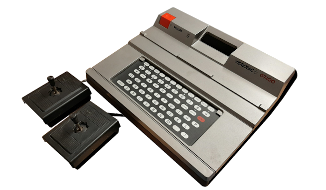
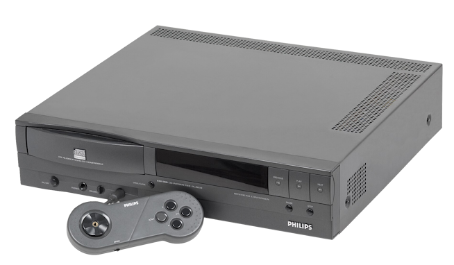

Philips Videopac G7000
La Philips Videopac G7000 fue una consola doméstica
comercializada en Europa a partir de 1978. Era la
versión europea de la Magnavox Odyssey², desarrollada
por Magnavox y comercializada también bajo la marca
Philips. Utilizaba cartuchos intercambiables e
incorporaba un teclado alfanumérico en la parte
frontal, además de dos mandos de juego.
Su catálogo incluía títulos de acción, deportes,
estrategia y juegos educativos. Fue uno de los
primeros sistemas de Philips dentro del mercado
europeo de las videoconsolas.

Philips Videopac+ G7400
La Videopac+ G7400 apareció en Europa en 1983 como
una evolución de la familia Videopac. Incorporaba
capacidades gráficas mejoradas y podía ejecutar
los cartuchos de la G7000, además de aprovechar
gráficos adicionales en determinados juegos.
Su lanzamiento fue limitado y no llegó a tener
una distribución tan amplia como otras consolas
de su época. Se había previsto una versión para
Norteamérica bajo el nombre Odyssey³ Command Center,
pero finalmente no se comercializó allí.

Philips CD-i
El Philips CD-i fue un sistema multimedia lanzado
comercialmente a comienzos de los años noventa,
con presencia en el mercado desde 1991. Su nombre
procede de Compact Disc Interactive. Además de
videojuegos, podía reproducir diferentes contenidos
interactivos, educativos y audiovisuales mediante
discos ópticos.
Aunque no fue una consola tradicional diseñada
exclusivamente para videojuegos, acabó convirtiéndose
en una máquina muy conocida entre los aficionados
por su peculiar catálogo. Entre sus títulos más
recordados están tres juegos relacionados con
The Legend of Zelda: Link: The Faces of Evil,
Zelda: The Wand of Gamelon y Zelda's Adventure.
También recibió Hotel Mario, protagonizado por
Mario y Luigi.
Las ventas globales estimadas del sistema se sitúan
entre las 570.000 y 1.000.000 de unidades.
